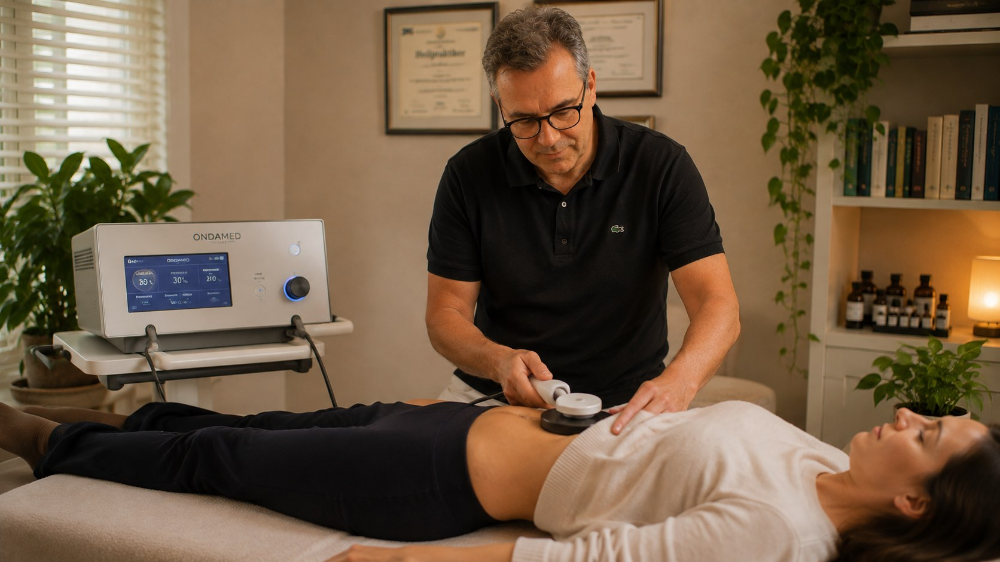

Sie suchen nach „Bioresonanz" in Nürnberg? Diese Seite ordnet den Begriff ein und erklärt, wie sich mein tatsächliches Verfahren – die Frequenztherapie mit einem Ondamed-Gerät (PEMF) – davon unterscheidet. Ich biete keine klassische Bioresonanztherapie an; die beiden Ansätze werden im Sprachgebrauch häufig verwechselt.

Bioresonanz ist ein Begriff aus der Alternativmedizin für Verfahren, die davon ausgehen, dass der Körper elektromagnetische Schwingungen aussendet, die gemessen und verändert an den Körper zurückgegeben werden können. Die wissenschaftliche Wirksamkeit ist umstritten; die Methode wird von der Schulmedizin nicht als anerkanntes Diagnose- oder Behandlungsverfahren geführt.
In meiner Praxis arbeite ich nicht mit klassischen Bioresonanzgeräten, sondern mit der Frequenztherapie über ein Ondamed-Gerät (PEMF – pulsierende elektromagnetische Felder). Dabei wird über eine Biofeedback-Messung ermittelt, welche Impulse Ihr Körper aktuell benötigt, und die passenden Frequenzen werden direkt angewendet. Das Funktionsprinzip ist verwandt, aber nicht identisch mit klassischer Bioresonanz – ich möchte hier bewusst keine Verwechslung entstehen lassen.
Geht davon aus, dass der Körper elektromagnetische Schwingungen aussendet, die über ein Bioresonanzgerät gemessen und verändert an den Körper zurückgegeben werden. Wird in meiner Praxis nicht angeboten.
Arbeitet mit pulsierenden elektromagnetischen Feldern (PEMF). Über eine Biofeedback-Messung wird ermittelt, welche Impulse Ihr Körper aktuell benötigt; die passenden Frequenzen werden in derselben Sitzung individuell ausgetestet und angewendet.
Mehr zur Frequenztherapie →Beide Verfahren sind wissenschaftlich umstritten und werden von der Schulmedizin nicht allgemein anerkannt. Der Unterschied liegt im konkreten Gerät und in der Vorgehensweise, nicht in einer belegten Wirksamkeit des einen oder anderen Ansatzes.
Ob die Frequenztherapie für Ihre Situation sinnvoll ist, klären wir gemeinsam im Erstgespräch.
Zur Frequenztherapie →0911 6007651 · Termine Mo–Sa 8–20 Uhr, So 10–22 Uhr
Hinweis: Bioresonanz-Verfahren sind wissenschaftlich umstritten und werden von der Schulmedizin nicht allgemein anerkannt. Diese Seite dient der Begriffserklärung; sie stellt kein Heilversprechen dar und ersetzt keine ärztliche Diagnose oder Behandlung.